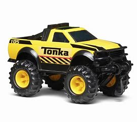
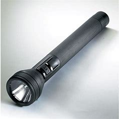
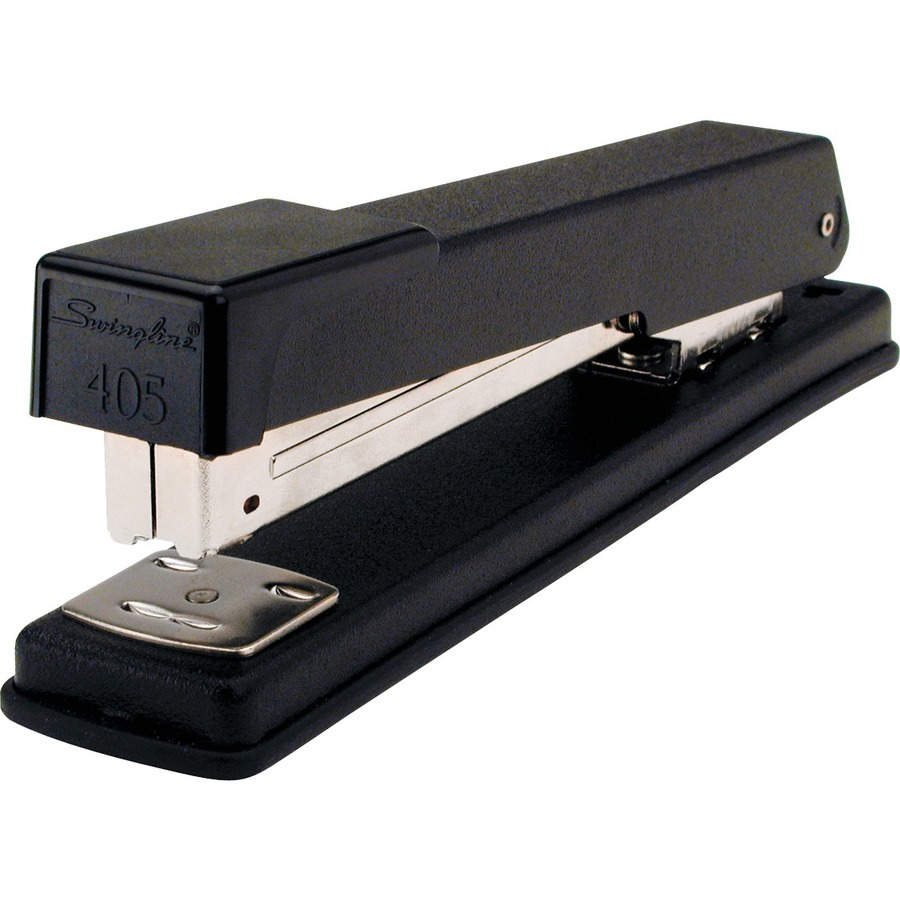

Case Study: Google Lens VS MobileNet
- Test Image - 
Output on GOOGLE LENS - Torch
Output on MOBILENET MODEL - Paintbrush
Result -
Google Lens is more accurate.
-
Test Image -

Output on GOOGLE LENS - Eyeglasses
Output on MOBILENET MODEL - Ski Mask
Result -
Google Lens is more accurate.
- Test Image - 
Output on GOOGLE LENS - Stapler
Output on MOBILENET MODEL - Joy Stick
Result -
Google Lens is more accurate.
- Test Image - 
Output on GOOGLE LENS - Hot Wheels Truck
Output on MOBILENET MODEL - Dark Glasses
Result -
Google Lens is more accurate.
I have tested 4 images in this case study and Google Lens was able to be more accurate in all 4 of the photos. Thus, according to this case study, Google Net is more accurate than MobileNet.